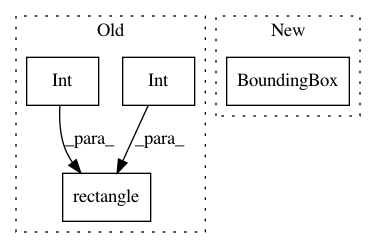

ab7fa48b8bb334a9eef82ae8945e5f27e7fccceb,plugins/extract/detect/mtcnn.py,Detect,process_output,#Detect#Any#Any#Any#Any#,153
Before Change
if isinstance(rotation_matrix, np.ndarray):
faces = [self.rotate_rect(face, rotation_matrix)
for face in faces]
detected = [dlib.rectangle( // pylint: disable=c-extension-no-member
int(face.left() / scale),
int(face.top() / scale),
int(face.right() / scale),
int(face.bottom() / scale))
for face in faces]
logger.trace("Processed Output: %s", detected)
return detected
After Change
if isinstance(rotation_matrix, np.ndarray):
faces = [self.rotate_rect(face, rotation_matrix)
for face in faces]
detected = [BoundingBox(face.left / scale, face.top / scale,
face.right / scale, face.bottom / scale)
for face in faces]
logger.trace("Processed Output: %s", detected)
return detected
In pattern: SUPERPATTERN
Frequency: 3
Non-data size: 4
Instances
Project Name: deepfakes/faceswap
Commit Name: ab7fa48b8bb334a9eef82ae8945e5f27e7fccceb
Time: 2019-05-07
Author: 36920800+torzdf@users.noreply.github.com
File Name: plugins/extract/detect/mtcnn.py
Class Name: Detect
Method Name: process_output
Project Name: deepfakes/faceswap
Commit Name: ab7fa48b8bb334a9eef82ae8945e5f27e7fccceb
Time: 2019-05-07
Author: 36920800+torzdf@users.noreply.github.com
File Name: plugins/extract/detect/cv2_dnn.py
Class Name: Detect
Method Name: process_output
Project Name: deepfakes/faceswap
Commit Name: ab7fa48b8bb334a9eef82ae8945e5f27e7fccceb
Time: 2019-05-07
Author: 36920800+torzdf@users.noreply.github.com
File Name: lib/utils.py
Class Name:
Method Name: rotate_landmarks